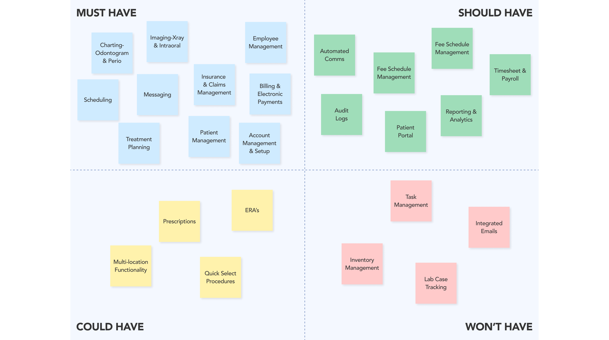
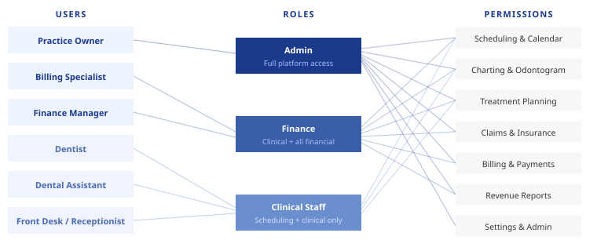
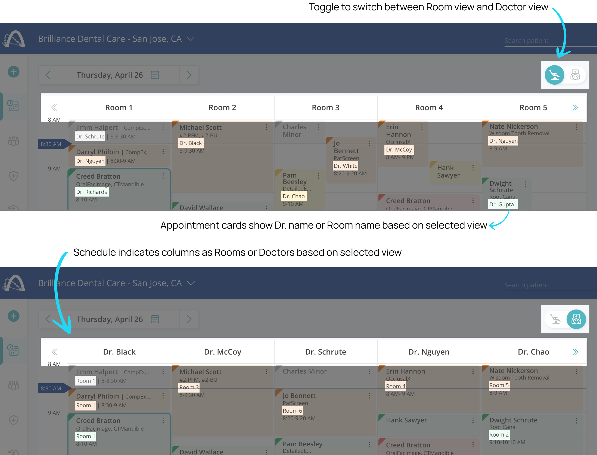
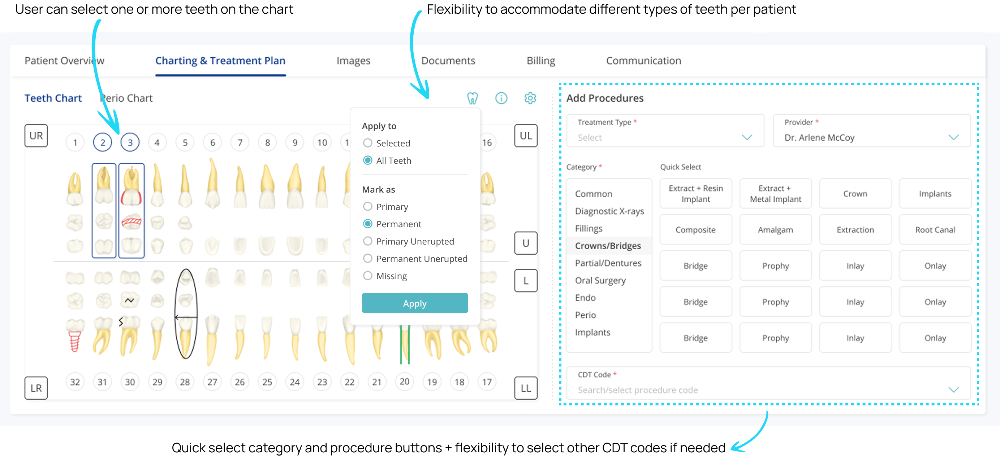
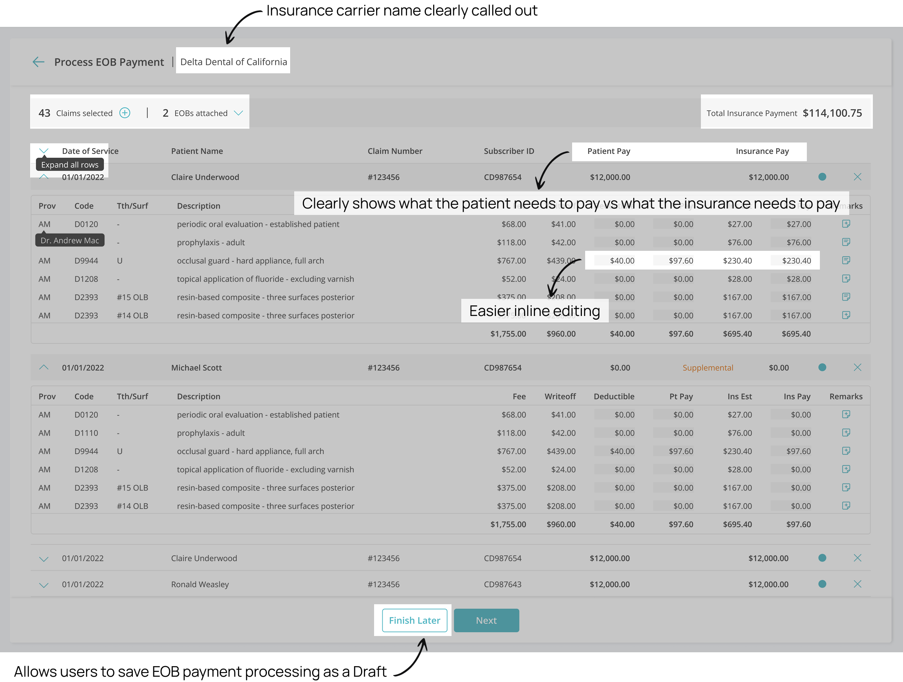
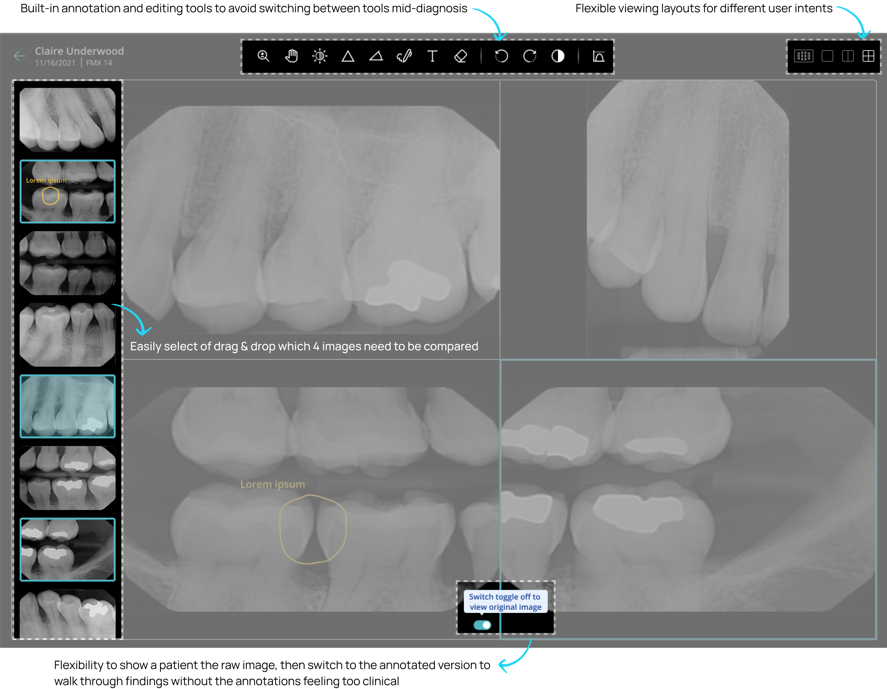

Overview
Archy is a cloud-based dental practice management platform I designed from scratch over 14 months as the sole designer — spanning practice management, patient engagement, billing, imaging, and payroll across more than a hundred screens.
The dental industry runs on infrastructure that hasn't meaningfully changed in 30 years. Dentrix — the market leader since 1982 — requires over 50 clicks to process a single insurance claim. Dental staff don't hate their software because they're tech-averse; they hate it because it was never designed for the way they actually work.
Archy's brief was to replace that. My job was to design something dental staff would actually want to use — and to ship it fast enough for a seed-stage startup to raise on.
Final Designs & Impact
Before diving into the process — here's a glimpse of what shipped across six of the thirteen product domains.
Research
Dental practices have two distinct user groups with almost no overlap in their daily workflows: the practice itself (dentists, front office, billing specialists, dental assistants) and their patients. Designing for both from a single platform meant the information architecture had to serve radically different mental models simultaneously.
I conducted user interviews and synthesized findings from Archy’s existing client relationships to build personas for each role.
User Personas
User Journeys
Competitive Analysis
The dental software market is dominated by tools built in the 1980s and 90s that have been patched rather than redesigned. I analyzed eight products — established players and newer entrants — to identify where the market was vulnerable and where Archy had an opening.
Feature Prioritization
From the competitive analysis and user research, I mapped features against a Must Have / Should Have / Could Have / Won't Have framework to define the MVP scope. The non-negotiables were the domains where legacy software was most painful: scheduling, charting, claims, and patient management. Everything else was phased.

Design Decisions
This section zooms into a handful of the more complex or interesting areas across the product — not to be exhaustive, but to give a sense of the thinking and constraints that shaped specific decisions.
01. Role-based access and permissions
With 9 roles on one platform, not everyone should see everything. I mapped a permission model where the practice owner gets full admin access, billing specialists get all financial sections — revenue reports, insurance reconciliation, payroll — and everyone else gets the clinical and operational tools relevant to their role. This wasn't just a security decision — it reduced cognitive load by surfacing only what was relevant to each person's day.

02. One surface, two users
Many domains had to serve users with fundamentally different mental models on the same screen. The scheduling calendar, for example, had to work for a dentist who thinks in terms of their own patients, and a front-desk coordinator who thinks in terms of room availability across the whole practice. Rather than building separate views, I designed a role-based toggle that defaults each user to the view that fits their context. This pattern recurred across several domains and became a core principle for the platform.

03. Designing for speed in the charting flow
A modal would have covered the odontogram entirely, so I used a persistent side panel — keeping the full mouth view visible while assistants entered data. The bigger unlock was quick-select category and procedure buttons for the most common procedures, so assistants could tap a surface area and pick rather than type — cutting charting time significantly for high-volume workflows.

04. Batch EOB processing to cut 50+ clicks down to a few
Insurance carriers send EOBs covering multiple patients and claims in a single PDF — but most dental software only let billing specialists process one claim at a time. I redesigned this as a batch flow: specialists upload one or more EOBs, select all related claims together, and payment estimates are auto-filled based on the EOB and patient claim data. They can then review each claim inline, make edits, mark as verified, and save the whole session as a draft — since batch review often gets interrupted mid-task. What required 50+ clicks per claim became a single, resumable workflow.

05. Designing the X-ray viewer around how dentists actually diagnose
X-ray review is one of the most clinically demanding parts of a dentist's workflow. I designed the viewer around three decisions: flexible layouts (single, 2-up, 4-up, or full session view) so dentists could work in the context that matched the task; built-in annotation and image editing tools — brightness, contrast, markup — to capture observations without leaving the screen (patient imaging is subject to HIPAA compliance, so exporting to an external photo editor was never an option); and a clean view toggle to instantly flip between the edited and original image, useful when walking a patient through findings.
